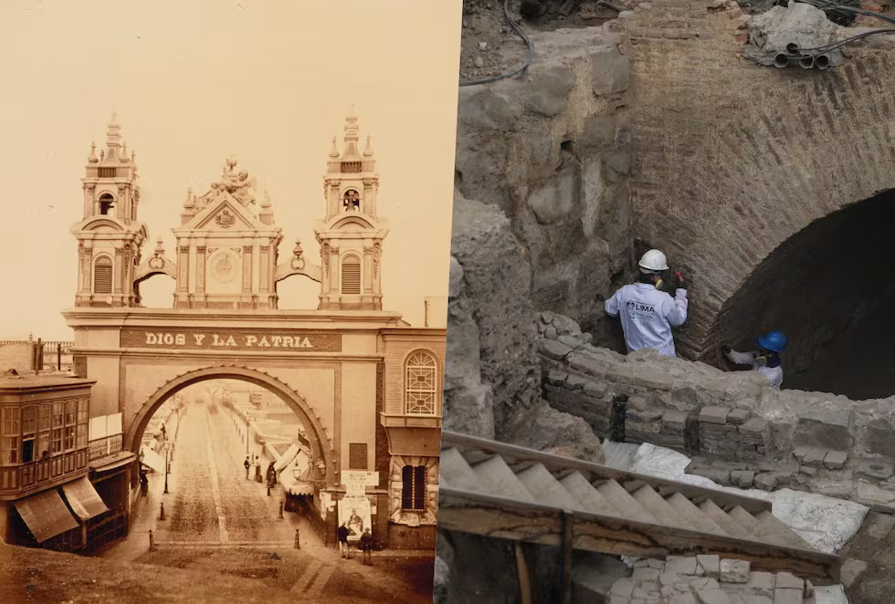

Ingeniería Civil
Laboratorio de Simulación de Proyectos
Patrimonio · Centro Histórico de Lima
Molino
de Aliaga
Recorrido Virtual 360°
Alameda Chabuca Granda · Lima, Perú
Iniciar recorrido
Recorrido patrimonial
Navegación interactiva
Recorrido 360°
Molino de Aliaga
Mapa
Laboratorio de
Simulación de Proyectos
01
01
Punto 01
Molino de Aliaga
Historia
Memoria del lugar
Historia